MySQL REST Service - PREVIEW
MRS DDL Reference
This document discusses the MySQL REST Service (MRS) DDL - SQL Extension. The MRS DDL - SQL Extension adds a set of MRS specific DDL statements to the MySQL Shell SQL handling in order to provide a familiar management interface to MySQL developers and DBAs.
Chapter Overview
Please also see
- MySQL REST Service - Developer’s Guide - This book explains how to install and configure the MySQL REST Service (MRS) as well as how to access the data through REST calls.
- MySQL REST Service - Core REST APIs - This book provides examples of using the MySQL REST Service queries and other operations against tables and views after you have REST-enabled them.
- MySQL REST Service - SDK Reference - This book explains how to work with the MRS Software Development Kit and discusses the Client APIs.
1 Introduction
It has been an essential goal of the MySQL REST Service (MRS) to provide a management interface that feels familiar to MySQL developers and DBAs and integrates well into their existing processes.
For this purpose the MySQL REST Service plugins directly into the MySQL Shell and MySQL Shell for VS Code. It extends the available SQL commands to include DDL (Data Definition Language) statements that allow managing the MySQL REST Service in an easy and seamless way.
This makes the process of creating a MySQL REST Service for your application as easy as creating a database schema or table.
Example
The following script configures the MySQL REST
Service, creates a new REST service
/myService and adds a REST schema
/sakila and a REST DUALITY VIEW
/actor that lists all actors and their film
titles.
CONFIGURE REST METADATA;
CREATE REST SERVICE /myService;
USE REST SERVICE /myService;
CREATE REST SCHEMA /sakila FROM `sakila`;
USE REST SCHEMA /sakila;
CREATE REST DUALITY VIEW /actor
FROM `sakila`.`actor` AS MyServiceSakilaActor {
actorId: actor_id @SORTABLE,
firstName: first_name,
lastName: last_name,
lastUpdate: last_update,
filmActor: sakila.film_actor @REDUCETO(title) {
film: sakila.film @UNNEST {
title: title
}
}
};Note: Please ensure to install the MySQL sakila example database schema before running the MRS DDL script above.
2 CONFIGURE and CREATE
2.1 CONFIGURE REST METADATA
The CONFIGURE REST METADATA statement is used to perform the initial configuration of the MySQL REST Service on a MySQL Server instance or InnoDB Cluster/Set.
It will create the
mysql_rest_service_metadata database
schema.
Please note that the MySQL account used to execute the statement needs the required privileges to create database schemas.
Syntax
configureRestMetadataStatement ::= 
restMetadataOptions ::= 
Example
CONFIGURE REST METADATA;2.1.1 Enable or Disable the MySQL REST Service
The enabledDisabled option specifies if the MySQL REST Service should be enabled or disabled after the configuration operation. The default is set to enable the MySQL REST Service.
enabledDisabled ::= 
Example
The following example disables the MySQL REST Service.
CONFIGURE REST METADATA DISABLED;2.1.2 REST Configuration Json Options
The jsonOptions allow to set a number of specific options for the service.
jsonOptions ::= 
These options can include the following JSON keys.
defaultStaticContent- Allows the definition of static content for the root
path
/that will be returned for file paths matching the given JSON keys. A JSON keyindex.htmlwill be served as/index.htmlby the MySQL Router. The file content needs to be Base64 encoded. If the same JSON key is used fordefaultStaticContentas well as fordefaultRedirects, the redirect is prioritized.
- Allows the definition of static content for the root
path
defaultRedirects- Is used to define internal redirects performed by
the MySQL Router. This can be used to expose content of
a REST service on the root path
/. A JSON keyindex.htmlholding the value/myService/myContentSet/index.htmlwill exposed the corresponding file from the given path as/index.html.
- Is used to define internal redirects performed by
the MySQL Router. This can be used to expose content of
a REST service on the root path
directoryIndexDirective- Holds an ordered list of files that should be
returned when a directory path has been requested. The
first matching file that is available will be returned.
The
directoryIndexDirectiveis recursively applies to all directory paths exposed by the MySQL Router. To change thedirectoryIndexDirectivefor a given REST service or REST static content set, the corresponding option needs to be set for those objects.
- Holds an ordered list of files that should be
returned when a directory path has been requested. The
first matching file that is available will be returned.
The
All other keys will be ignored and can be used to store custom metadata about the service. It is a good practice to include a unique prefix when adding custom keys to avoid them be overwritten by future MRS options.
Examples
The following JsonValue will define the static
content for /index.html,
/favicon.ico and /favicon.svg.
It will also direct the MySQL Router to return the
contents of /index.html if the root path
/ is requested,
e.g. https://my.domain.com/
{
"defaultStaticContent": {
"index.html": "PCFET0NUW...",
"favicon.ico": "AAABAAMAM...",
"favicon.svg": "PD94bWwmV..."
},
"directoryIndexDirective": [
"index.html"
]
}In this example an internal redirect of
/index.html to
/myService/myContentSet/index.html is
performed, directly serving the index.html
page of /myService/myContentSet. This
overwrites the index.html definition in
defaultStaticContent.
This is useful to directly serve a specific app on
the root path /.
{
"defaultStaticContent": {
"index.html": "PCFET0NUW...",
"favicon.ico": "AAABAAMAM...",
"favicon.svg": "PD94bWwmV..."
},
"defaultRedirects": {
"index.html": "/myService/myContentSet/index.html"
},
"directoryIndexDirective": [
"index.html"
]
}2.1.3 Updating the MySQL REST Service Metadata Schema
If the updateIfAvailable is defined, the configure
operation will include an update of the
mysql_rest_service_metadata database
schema.
updateIfAvailable ::= 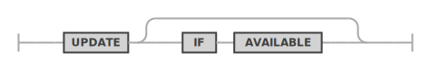
2.2 CREATE REST SERVICE
The CREATE REST SERVICE statement is used to create a new or replace an existing REST service.
The MySQL REST Service supports the creation of many individual REST services. It is good practice to create a separate REST service for each REST application.
Each REST service can have its own options, authentication apps and supports a different set of authentication users.
SYNTAX
createRestServiceStatement ::=
restServiceOptions ::= 
Examples
The following example creates a REST service
/myTestService that can only be accessed
from localhost.
CREATE OR REPLACE REST SERVICE /myService
COMMENTS "A simple REST service";The following example creates a REST service
/myTestService that can only be accessed on
localhost and is disabled after creation.
CREATE OR REPLACE REST SERVICE localhost/myTestService
DISABLED
COMMENTS "A REST service that can only be accessed on localhost";CREATE OR REPLACE REST SERVICE localhost/myTestService
COMMENTS "A simple REST service"
AUTHENTICATION
PATH "/authentication"
REDIRECTION DEFAULT
VALIDATION DEFAULT
PAGE CONTENT DEFAULT
USER MANAGEMENT SCHEMA DEFAULT
OPTIONS {
"headers": {
"Access-Control-Allow-Credentials": "true",
"Access-Control-Allow-Headers": "Content-Type, Authorization, X-Requested-With, Origin, X-Auth-Token",
"Access-Control-Allow-Methods": "GET, POST, PUT, DELETE, OPTIONS"
},
"http": {
"allowedOrigin": "auto"
},
"logging": {
"exceptions": true,
"request": {
"body": true,
"headers": true
},
"response": {
"body": true,
"headers": true
}
},
"returnInternalErrorDetails": true
};2.2.1 Enabling or Disabling a REST Service at Creation Time
The enabledDisabled option specifies
whether the REST schema should be enabled or disabled
after it has been created.
enabledDisabled ::=
2.2.2 REST Service Authentication Settings
Each REST service requires allows for specific authentication settings.
restAuthentication ::= 
- AUTHENTICATION PATH
- The html path used for authentication handling for
this REST service. Specified as a sub-path to the REST
service path. If not explicitly set, the default is path
is
/authenticationis used. - The following endpoints will be made available for
<service_path>/<auth_path>/login/status/logout/completed
- The html path used for authentication handling for
this REST service. Specified as a sub-path to the REST
service path. If not explicitly set, the default is path
is
- AUTHENTICATION REDIRECTION
- The authentication workflow will redirect to this
URL after successful- or failed login. Specified as a
sub-path to the REST service path. If this option is not
set explicitly, the workflow will redirect to
<service_path>/<auth_path>/completedif the<service_path>/<auth_path>/login?onCompletionRedirectparameter has not been set.
- The authentication workflow will redirect to this
URL after successful- or failed login. Specified as a
sub-path to the REST service path. If this option is not
set explicitly, the workflow will redirect to
- AUTHENTICATION VALIDATION
- A regular expression to validate the
<service_path>/<auth_path>/login?onCompletionRedirectparameter. If set, this allows to limit the possible URLs an application can specify for this parameter.
- A regular expression to validate the
- AUTHENTICATION PAGE CONTENT
- If this option is set its content will replace the
page content of the
<service_path>/<auth_path>/completedpage.
- If this option is set its content will replace the
page content of the
2.2.3 REST Service Json Options
The jsonOptions allow to set a number of specific options for the service.
jsonOptions ::=
These options can include the following JSON keys.
headers- Allows the specification of HTTP headers. Please refer to the HTTP header documentation for details.httpallowedOrigin- The setting for Access-Control-Allow-Origin HTTP header. Can either be set to*,null,<origin>orauto. When set toauto, the MySQL Routers will return the origin of the specific client making the request.
loggingexceptions- If exceptions should be logged.requestsbody- If the content of request bodies should be logged.headers- If the content of request headers should be logged.
responsebody- If the content of response bodies should be logged.headers- If the content of response headers should be logged.
returnInternalErrorDetails- If internal errors should be returned. This is useful for application development but should be turned off for production deployments.defaultStaticContent- Allows the definition of static content forrequest pathof the REST service that will be returned for file paths matching the given JSON keys. A JSON keyindex.htmlwill be served as/myService/index.htmlby the MySQL Router if therequest pathof the REST service has been set to/myService. The file content needs to be Base64 encoded. If the same JSON key is used fordefaultStaticContentas well as fordefaultRedirects, the redirect is prioritized.defaultRedirects- Is used to define internal redirects performed by the MySQL Router. This can be used to expose content on therequest pathof the of a REST service. A JSON keyindex.htmlholding the value/myService/myContentSet/index.htmlwill exposed the corresponding file from the given path as/myService/index.htmlif therequest pathof the REST service has been set to/myService.directoryIndexDirective- Holds an ordered list of files that should be returned when a directory path has been requested. The first matching file that is available will be returned. ThedirectoryIndexDirectiveis recursively applies to all directory paths exposed by the MySQL Router. To change thedirectoryIndexDirectivefor a given REST object, the corresponding option needs to be set for that object.
All other keys will be ignored and can be used to store custom metadata about the service. It is a good practice to include a unique prefix when adding custom keys to avoid them be overwritten by future MRS options.
Examples
{
"headers": {
"Access-Control-Allow-Credentials": "true",
"Access-Control-Allow-Headers": "Content-Type, Authorization, X-Requested-With, Origin, X-Auth-Token",
"Access-Control-Allow-Methods": "GET, POST, PUT, DELETE, OPTIONS"
},
"http": {
"allowedOrigin": "auto"
},
"logging": {
"exceptions": true,
"request": {
"body": true,
"headers": true
},
"response": {
"body": true,
"headers": true
}
},
"returnInternalErrorDetails": true
}2.2.4 REST Service Comments
The comments can hold a description of the REST service. The maximal length is of the comments string is 512 characters.
comments ::= 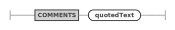
2.3 CREATE REST SCHEMA
The CREATE REST SCHEMA statement is used to create a new or replace an existing REST schema. Each REST schema directly maps to a database schema and allows the database schema objects (tables, views and stored procedures) to be exposed via REST endpoints.
Note: Adding a REST schema to a REST service does not automatically expose any database schema objects via REST. The corresponding
CREATE REST TABLE,CREATE REST DUALITY VIEW,CREATE REST PROCEDUREddl commands need to be called to explicitly expose a database schema object.
Each REST schema belongs to a REST service, which has to be created first. One REST service can hold many REST schemas.
Each REST schema can have its own options, authentication apps and supports a different set of authentication users.
SYNTAX
createRestSchemaStatement ::=
restSchemaOptions ::= 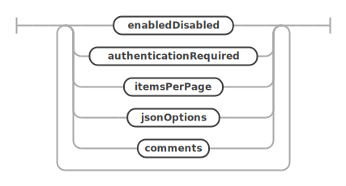
Examples
The following example creates a REST schema
/sakila on the REST service
/myService.
CREATE OR REPLACE REST SCHEMA /sakila ON SERVICE /myService
FROM `sakila`
COMMENTS "The sakila schema";2.3.1 Enabling or Disabling a REST Schema at Creation Time
The enabledDisabled option specifies
whether the REST schema should be enabled or disabled
what it is created.
enabledDisabled ::=
2.3.2 Requiring Authentication for REST Schema Access
The authenticationRequired option
specifies if a REST schema and its objects require
authentication before accessing their REST
endpoints.
authenticationRequired ::= 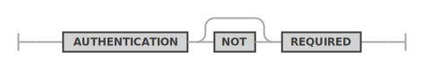
2.3.3 Specifying the Default Page Count
The itemsPerPage option can be used to
specify the default number of items returned for queries
run against this REST schema.
itemsPerPage ::= 
The number of items per page can also be specified for each REST object individually.
2.3.4 REST Schema Json Options
The jsonOptions allow to set a number of specific options for the service.
jsonOptions ::=
These options can include the following JSON keys.
defaultStaticContent- This option serves the same purpose as described in the REST Configuration Json Options.defaultRedirects- This option serves the same purpose as described in the REST Configuration Json Options.directoryIndexDirective- This option serves the same purpose as described in the REST Configuration Json Options.
All other keys will be ignored and can be used to store custom metadata about the schema. It is a good practice to include a unique prefix when adding custom keys to avoid them be overwritten by future MRS options.
2.3.5 REST Schema Comments
The comments can hold a description of the REST schema. The maximal length is of the comments string is 512 characters.
comments ::=
2.4 CREATE REST DUALITY VIEW
The CREATE REST DUALITY VIEW statement
is used to add REST endpoints for database schema tables
or views. They will be served as JSON duality views.
The structure of the served JSON documents is defined using an extended GraphQL syntax. This allows to define even complex REST duality views in a simple and human readable way. Please see the corresponding GraphQL section about how to design the GraphQL definition for a REST duality view.
Please see the MRS Developer’s Guide to learn more about JSON duality views.
SYNTAX
createRestViewStatement ::= 
serviceSchemaSelector ::= 
restObjectOptions ::=
Examples
The following example adds a REST duality view for
the sakila.city database schema table.
CREATE REST DUALITY VIEW /city
ON SERVICE /myService SCHEMA /sakila
FROM `sakila`.`city` AS MyServiceSakilaCity {
cityId: city_id @SORTABLE,
city: city,
countryId: country_id,
lastUpdate: last_update
};Querying the REST duality view using the TypeScript SDK returns the following JSON document.
ts> myService.sakila.city.findFirst();
{
"city": "A Corua (La Corua)",
"links": [
{
"rel": "self",
"href": "/myService/sakila/city/1"
}
],
"cityId": 1,
"countryId": 87,
"lastUpdate": "2006-02-15 04:45:25.000000",
"_metadata": {
"etag": "EE93452B41984F3F5BBB0395CCB2CED00F5C748FEEA4A36CCD749CC3F85B7CEA"
}
}The next example adds the referenced table
sakila.country to the REST duality
view.
CREATE OR REPLACE REST DUALITY VIEW /city
ON SERVICE /myService SCHEMA /sakila
FROM `sakila`.`city` AS MyServiceSakilaCity {
cityId: city_id @SORTABLE,
city: city,
countryId: country_id,
lastUpdate: last_update,
country: sakila.country {
countryId: country_id @SORTABLE,
country: country,
lastUpdate: last_update
}
};This is what the REST duality view looks like in the interactive MySQL REST Object Dialog in the MySQL Shell for VS Code extension.

Running a TypeScript SDK query against this new REST endpoint returns the following JSON Document.
ts> myService.sakila.city.findFirst();
{
"city": "A Corua (La Corua)",
"links": [
{
"rel": "self",
"href": "/myService/sakila/city/1"
}
],
"cityId": 1,
"country": {
"country": "Spain",
"countryId": 87,
"lastUpdate": "2006-02-15 04:44:00.000000"
},
"countryId": 87,
"lastUpdate": "2006-02-15 04:45:25.000000",
"_metadata": {
"etag": "FFA2187AD4B98DF48EC40B3E807E0561A71D02C2F4F5A3B953AA6CB6E41CAD16"
}
}2.4.1 Preconditions
You define a REST duality view against a set of tables related by primary key (PK), foreign key (FK) or unique key constraints (UK). The following rules apply:
- The constraints must be declared in the database.
- The relationships type can be 1-to-1, 1-to-N and N-to-M (using a mapping table with two FKs). The N-to-M relationship can be thought of as the combination of 1-to-N and 1-to-1 relationship
- Columns of two or more tables with 1-to-1 or N-to-1 relationships can be merged into the same JSON object via UNNEST. Otherwise a nested JSON object is created.
- Tables with a 1-to-N relationship create a nested JSON array.
- Each item in the duality view is one JSON object, which is typically a hierarchy of nested objects and arrays.
- Each application object is built from values originating from one or multiple rows from the underlying tables of that view. Typically, each table contributes to one (nested) JSON object.
2.4.2 Enabling or Disabling a REST Duality View at Creation Time
The enabledDisabled option specifies
whether the REST duality view should be enabled or
disabled when it is created.
enabledDisabled ::=
2.4.3 Requiring Authentication for REST Duality Views
The authenticationRequired option
specifies if a REST duality view requires authentication
before accessing its REST endpoints.
authenticationRequired ::=
2.4.4 Specifying the Page Count for REST Duality Views
The itemsPerPage option can be used to
specify the number of items returned for queries run
against the REST duality view.
itemsPerPage ::=
The number of items per page can also be specified for each REST object individually.
2.4.5 Setting the Media Type for REST Duality Views
If this REST duality view returns a specific MIME
type it can be set via the
restViewMediaType option. If MRS should try
to automatically detect the file type based on the
content of the file the AUTODETECT option
can be used.
restViewMediaType ::= 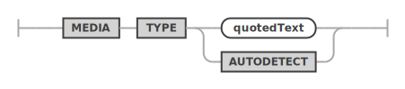
2.4.6 Setting the Result Format for REST Duality Views
A REST duality view can return one of the following
formats which can be set with the
restViewFormat option.
- FEED: A list of result JSON objects
- ITEM: A single result item
- MEDIA: A single blob item. The
restViewMediaTypeoption is used to set the corresponding MIME type in this case.
restViewFormat ::= 
2.4.7 Using a Custom Authentication Procedure for a REST Duality View
In case the built in authentication handling does not cover the specific use case for a REST duality view, a custom MySQL stored procedure can be used to handle the authentication check for the given user and the requested CRUD operation.
The referenced MySQL stored procedure has to be in
the same schema as the database schema object and it has
to accept the following parameters:
(IN user_id BINARY(16), IN schema VARCHAR(255), IN object VARCHAR(255), IN crud_operation VARCHAR(4)).
It needs to returns true or
false.
restViewAuthenticationProcedure ::= 
2.4.8 Defining the GraphQL definition for a REST Duality View
graphGlObj ::= 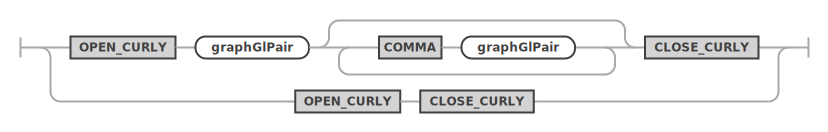
graphGlCrudOptions ::=
graphGlPair ::=
graphGlValue ::= 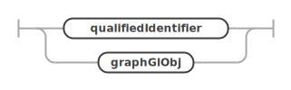
2.5 CREATE REST PROCEDURE
The CREATE REST PROCEDURE statement is
used to add REST endpoints for database schema stored
procedures. It uses the same extended
GraphQL syntax as defined for REST duality views to
describe the REST procedure’s parameters and result
sets. Please make sure to study the corresponding
section.
SYNTAX
createRestProcedureStatement ::= 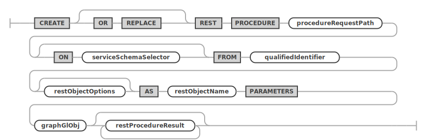
serviceSchemaSelector ::=
restObjectOptions ::=
restProcedureResult ::= 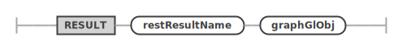
2.6 CREATE REST CONTENT SET
The CREATE REST CONTENT SET statement is
used to add REST endpoints for static content.
SYNTAX
createRestContentSetStatement ::= 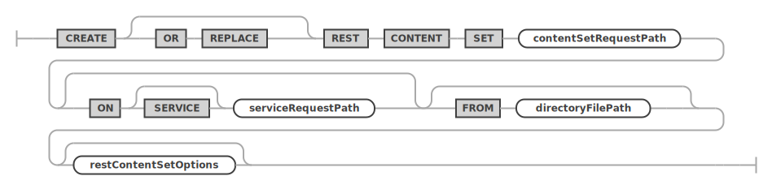
restContentSetOptions ::=
2.7 CREATE REST AUTH APP
The CREATE REST AUTH APP statement is
used to add REST authentication app to a REST
service.
SYNTAX
createRestAuthAppStatement ::=
restAuthAppOptions ::= 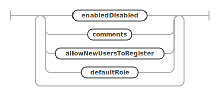
allowNewUsersToRegister ::=
defaultRole ::=
2.8 CREATE REST USER
The CREATE REST USER statement is used
to add REST user to a REST authentication app.
SYNTAX
createRestUserStatement ::=
3 ALTER
3.1 ALTER REST SERVICE
An existing REST service can be altered by using the
ALTER REST SERVICE statement. It uses the
same restServiceOptions as used by the CREATE REST SERVICE
statement. Please see the discussion of the options there.
SYNTAX
alterRestServiceStatement ::=
restServiceOptions ::=
Examples
The following example alters a REST service
/myService by setting a new comment.
ALTER REST SERVICE /myService
COMMENTS "A simple, improved REST service";3.2 ALTER REST SCHEMA
An existing REST schema can be altered by using the
ALTER REST SCHEMA statement. It uses the
same restSchemaOptions as used by the CREATE REST SCHEMA
statement. Please see the discussion of the options
there.
SYNTAX
alterRestSchemaStatement ::= 
restSchemaOptions ::=
Examples
The following example alters a REST schema
/myService to use a new request path
/myPublicService.
ALTER REST SCHEMA /sakila ON SERVICE /myService
NEW REQUEST PATH /myPublicService;3.3 ALTER REST DUALITY VIEW
The ALTER REST DUALITY VIEW statement is
used to alter existing REST duality views.
Please see the corresponding GraphQL section about how to design the GraphQL definition for a REST duality view.
Please see the MRS Developer’s Guide to learn more about JSON duality views.
SYNTAX
alterRestViewStatement ::= 
serviceSchemaSelector ::=
restObjectOptions ::=
Examples
The following example alters a REST duality view for
the sakila.city database schema table and
sets a new list of fields.
ALTER REST DUALITY VIEW /city
ON SERVICE /myService SCHEMA /sakila
FROM `sakila`.`city` AS MyServiceSakilaCity {
cityId: city_id @SORTABLE,
city: city
};3.4 ALTER REST PROCEDURE
The ALTER REST PROCEDURE statement is
used to alter REST endpoints for database schema stored
procedures.
It uses the same extended GraphQL syntax as defined for REST duality views to describe the REST procedure’s parameters and result sets. Please make sure to study the corresponding section.
SYNTAX
alterRestProcedureStatement ::= 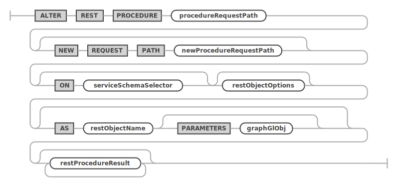
serviceSchemaSelector ::=
restObjectOptions ::=
4 DROP
4.1 DROP REST SERVICE
An existing REST service can be dropped by using the
DROP REST SERVICE statement.
SYNTAX
dropRestServiceStatement ::= 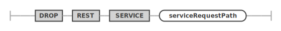
Examples
The following example drops a REST service with the
request path /myService.
DROP REST SERVICE /myService;4.2 DROP REST SCHEMA
An existing REST schema can be dropped by using the
DROP REST SCHEMA statement.
SYNTAX
dropRestSchemaStatement ::= 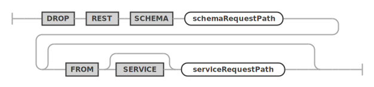
Examples
The following example drops a REST schema using the
request path /myService.
DROP REST SCHEMA /sakila FROM SERVICE /myService;4.3 DROP REST DUALITY VIEW
The DROP REST DUALITY VIEW statement is
used to drop existing REST duality views.
SYNTAX
dropRestDualityViewStatement ::= 
Examples
The following example drops a REST duality view using
the request path /city.
DROP REST DUALITY VIEW /city
FROM SERVICE /myService SCHEMA /sakila;4.4 DROP REST PROCEDURE
The DROP REST PROCEDURE statement is
used to drop an existing REST procedures.
SYNTAX
dropRestProcedureStatement ::= 
4.5 DROP REST CONTENT SET
The DROP REST CONTENT SET statement is
used to drop an existing REST static content set.
SYNTAX
dropRestContentSetStatement ::= 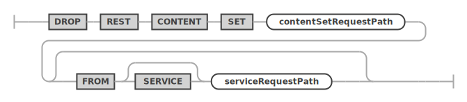
4.6 DROP REST AUTH APP
The DROP REST AUTH APP statement is used
to drop an existing REST authentication app from a REST
service.
SYNTAX
dropRestAuthAppStatement ::= 
4.7 DROP REST USER
The DROP REST USER statement is used to
drop an existing REST user from a REST authentication
app. SYNTAX
dropRestUserStatement ::= 
5 USE and SHOW
5.1 USE
An existing REST service can be dropped by using the
DROP REST SERVICE statement.
SYNTAX
useStatement ::= 
serviceAndSchemaRequestPaths ::= 
Examples
The following example makes the REST service with the
request path /myService the new default
REST service.
USE REST SERVICE /myService;After the default REST service has been set, the following statement can be used to set the default REST schema.
USE REST SCHEMA /sakila;The next example shows how to set the default REST service and REST schema in a single statement.
USE REST SERVICE /myService SCHEMA /sakila;5.2 SHOW REST STATUS
The SHOW REST STATUS statement is used
to get basic information about the current status of the
MySQL REST Service.
SYNTAX
showRestMetadataStatusStatement ::= 
Examples
The following example drops a REST schema using the
request path /myService.
SHOW REST STATUS;5.3 SHOW REST SERVICES
The SHOW REST SERVICES statement lists
all available REST services.
SYNTAX
showRestServicesStatement ::= 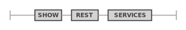
Examples
The following example lists all REST services.
SHOW REST SERVICES;5.4 SHOW REST SCHEMAS
The SHOW REST SCHEMAS statement lists
all available REST schemas of the given or current REST
service.
SYNTAX
showRestSchemasStatement ::= 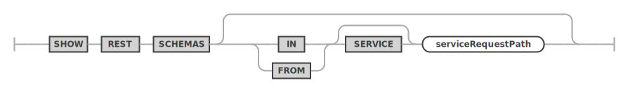
Examples
The following example lists all REST schemas of the
REST service using the request path
/myService.
SHOW REST SERVICES FROM /myService;5.5 SHOW REST DUALITY VIEWS
The SHOW REST DUALITY VIEWS statement
lists all available REST duality views of the given or
current REST schema.
SYNTAX
showRestViewsStatement ::= 
serviceSchemaSelector ::=
Examples
The following example lists all REST duality views of the given REST schema.
SHOW REST DUALITY VIEWS FROM SERVICE /myService SCHEMA /sakila;5.6 SHOW REST PROCEDURES
The SHOW REST PROCEDURES statement lists
all available REST procedures of the given or current
REST schema.
SYNTAX
showRestProceduresStatement ::= 
serviceSchemaSelector ::=
Examples
The following example lists all REST procedures of the given REST schema.
SHOW REST PROCEDURES FROM SERVICE /myService SCHEMA /sakila;5.7 SHOW REST CONTENT SETS
The SHOW REST CONTENT SETS statement
lists all available REST content sets of the given or
current REST service.
SYNTAX
showRestContentSetsStatement ::= 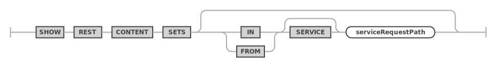
Examples
The following example lists all REST content sets of the given REST service.
SHOW REST CONTENT SETS FROM SERVICE /myService;5.8 SHOW REST AUTH APPS
The SHOW REST AUTH APPS statement lists
all available REST auth apps of the given or current
REST service.
SYNTAX
showRestAuthAppsStatement ::=
Examples
The following example lists all REST auth apps of the given REST service.
SHOW REST AUTH APPS FROM SERVICE /myService;5.9 SHOW CREATE REST SERVICE
The SHOW CREATE REST SERVICE statement
shows the corresponding DDL statement for the given REST
service.
SYNTAX
showCreateRestServiceStatement ::= 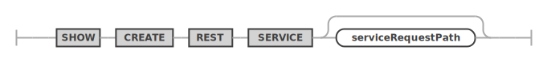
Examples
The following example shows the DDL statement for the
REST service with request path
/myService.
SHOW CREATE REST SERVICE /myService;5.10 SHOW CREATE REST SCHEMA
The SHOW CREATE REST SCHEMA statement
shows the corresponding DDL statement for the given REST
schema.
SYNTAX
showCreateRestSchemaStatement ::= 
Examples
The following example shows the DDL statement for the given REST schema.
SHOW CREATE REST SCHEMA /sakila FROM /myService;5.11 SHOW CREATE REST DUALITY VIEW
The SHOW CREATE REST DUALITY VIEW
statement shows the corresponding DDL statement for the
given REST duality view.
SYNTAX
showCreateRestViewStatement ::= 
serviceSchemaSelector ::=
Examples
The following example shows the DDL statement for the given REST duality view.
SHOW CREATE REST DUALITY VIEW /city ON SERVICE /myService SCHEMA /sakila;5.12 SHOW CREATE REST PROCEDURE
The SHOW CREATE REST PROCEDURE statement
shows the corresponding DDL statement for the given REST
procedure.
SYNTAX
showCreateRestProcedureStatement ::= 
serviceSchemaSelector ::=
Examples
The following example shows the DDL statement for the given REST procedure.
SHOW CREATE REST PROCEDURE /inventory_in_stock ON SERVICE /myService SCHEMA /sakila;5.13 SHOW CREATE AUTH APP
The SHOW CREATE AUTH APP statement shows
the corresponding DDL statement for the given REST auth
app.
SYNTAX
showCreateRestAuthAppStatement ::=
Examples
The following example shows the DDL statement for the given REST auth app.
SHOW CREATE REST AUTH APP "MRS" FROM SERVICE localhost/myTestService;Copyright (c) 2023, Oracle and/or its affiliates.